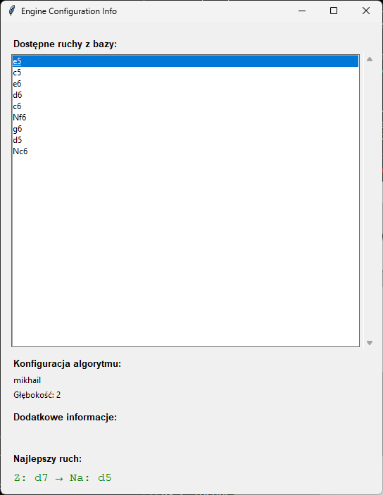

Wybór tej opcji spowoduje otworzenie się nowych okien podczas gry:
oraz
W pierwszym oknie możemy zobaczyć obliczaną w czasie rzeczywistym ewaluację, liczbę możliwych do wykonania ruchów, oraz czas przeznaczony na wykonywanie ruchów przez graczy.
W drugim oknie podczas gry z arcymistrzem zobaczymy listę dostępnych następnych ruchów z bazy danych, konfigurację algorytmu (np. jego głębokość), różne dodatkowe informacje, oraz najlepszy ruch wyliczony przez algorytm.
Dodatkowo nerd view pokazuje podczas gry po sieci okno z wartością ping-u i innymi informacjami na temat połączenia.
Gdy włączony jest nerd view, zamiast wyświetlania okna z komunikatem o błędzie, program zamyka się, a szczegóły błędu można odczytać w terminalu.